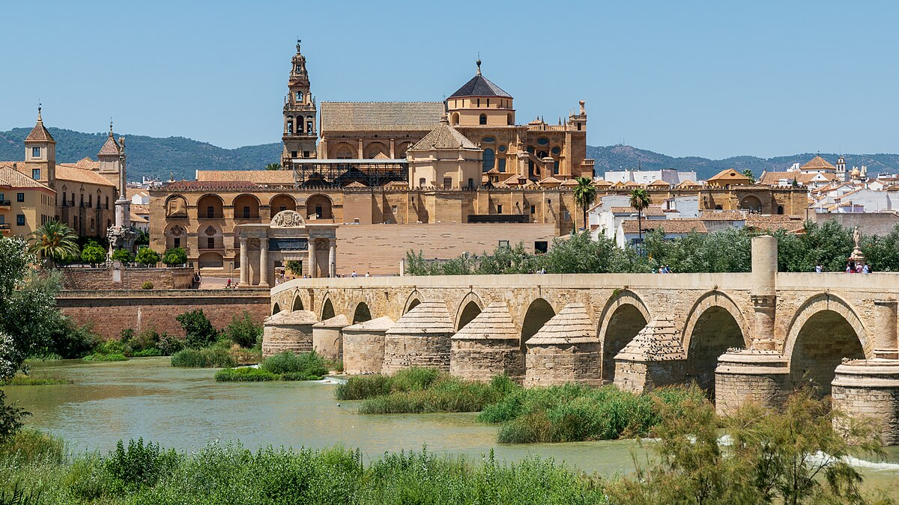
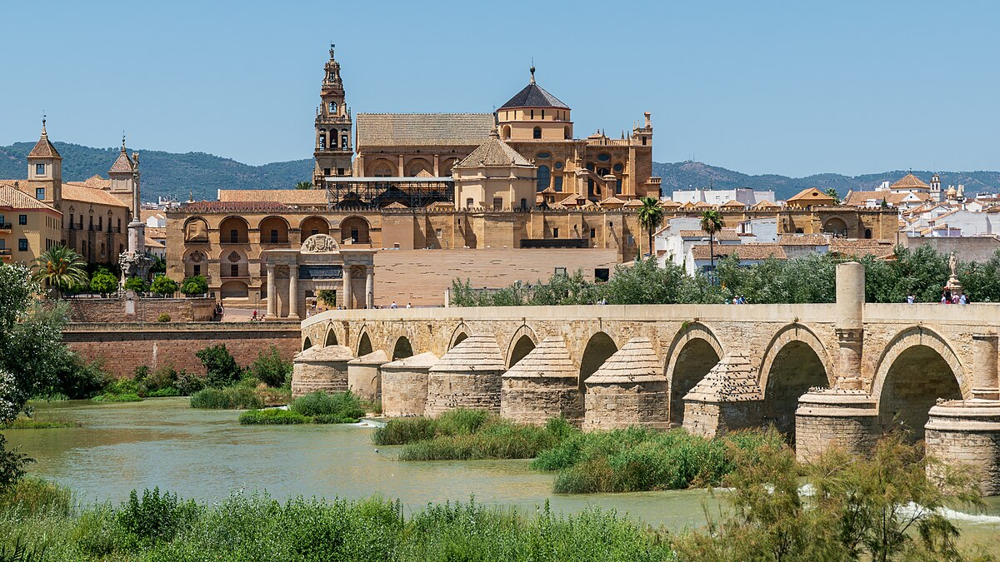

Region: Central del País
Puntos de Interes
Mar Chiquita
Es la quinta laguna salada más grande del mundo, en el noreste provincial.
Naturaleza asombrosa en un enorme espejo de agua que asemeja un mar interior.
Es una reserva de aves de renombre mundial: un sitio de avistaje de fauna
que deslumbra.
3. El Camino Real
Una senda que se remonta al pasado y recorre el norte cordobés, desde Colonia
Caroya hasta San Francisco del Chañar. Valen las paradas en las postas de
tiempos
coloniales (como la de Sinsacate) y en los varios pueblos que conservan
alma e imagen histórica, como Villa Tulumba (foto) y Villa del Totoral.
Capital, urbe histórica
Imposible obviar la ciudad de Córdoba, fundante del resto de la provincia
que lleva su nombre. Puede atraer su fortaleza comercial, industrial y cultural,
pero es imperdible además un recorrido por la Manzana Jesuítica, Patrimonio
Mundial de la Humanidad desde 2001.
 

Punilla Sur
Villa Carlos Paz es la ciudad con mayor capacidad para alojar visitantes
en Córdoba. De fuerte presencia comercial y de espectáculos, no queda afuera
de ningún mapa turístico. Pero conviene sumarle un recorrido por los pueblos
cercanos y balnearios más tranquilos sobre el río San Antonio,
como Cuesta Blanca, Mayu Sumaj y otros.

Gastronomia
La cocina cordobesa es muy variada y elaborada; emplea productos
de raigambre indígena como el maíz y la yuca que se han
complementado
con otros ingredientes como la berenjena y
la almendra de los árabes, y el arroz,
el plátano y el ñame
de las culturas africana y asiática. Estos alimentos,
junto con el pescado, la carne de res y de cerdo,
conforman la esencia de la cocina de Córdoba.